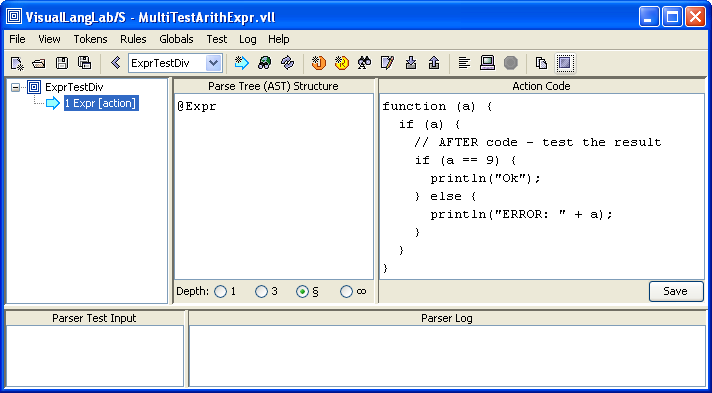

VisualLangLab - Testing Parsers
The greatest advantage of VisualLangLab
over other tools is ease of testing.
Every other parser development tool requires
a quite complex code-generation step that must be completed without
errors before the parser can be run for testing.
But the grammar-trees in VisualLangLab are executable --
meaning they can be run directly without any code-generation or
other manual activity.
Validation is Easy as A-B-C
Since the grammar-tree is executable, validation is just
three simple steps:
- Enter test input in the Parser Test Input area (as at "A"
in Figure-1 below)
- Click the Parse input button (at "B" in Figure-1),
or select Test -> Parse input from the main menu
- Verify that the parser's output (at "C") is correct
If you need help in understanding how to interpret the output go to
AST and Action Code

Figure-1. Three simple steps to validation
The approach shown above is tedious as it requires manual verification
of potentially complex data-structures. So while several approaches to
test automation will be described below, note that manual testing is
very useful during prototyping or active development --
particularly to support an iterative, incremental process.
Divide and Conquer
Clicking the Parse input button runs just the displayed grammar-tree.
This behavior lets you validate independent parts of a large parser
separately, simplifying and speeding up development of large and complex parsers.
However, if a grammar-tree contains any Reference nodes,
execution will spill over to the other referred nodes.
This is essential behavior, being the mechanism by which large parsers
are built up from smaller parser-rules. There are a few important points to be
remembered from this insight:
- Parsers should be divided into logically separate parts, with each
part being a grammar-tree (or a tree of grammar-trees)
- While recursion and mutual recursion can lead to elegant solutions,
they are often difficult to test, and should be avoided if possible
- When testing a complete parser, make sure that the top-level parser-rule
(or grammar-tree) is selected
Forgetting the last point above is a souce of much confusion during testing
of parsers. The ComboBox for selection of parser-rules lists their names
alphabetically, so the grammar-tree displayed immediately after a new file
is loaded is not necessarily the top-level parser-rule. To alleviate this problem,
the top-level parser-rule should be given a name with an intial capital letter.
If all the other parser-rules have names beginning with lower-case
letters, the top-level parser-rule will always be at the top of the list
in the ComboBox, and be the first to display when the containing file is opened.
This convention is used in all the built-in Sample Grammars.
Getting Test Input from Files
Input for testing can also be obtained from a file instead of the
Parser Test Input area. To provide input from a file,
you should click the Parse file button
 (next to the Parse input button).
When the Parse file button is clicked a file-chooser dialog
is presented. Selecting a file and clicking the file-chooser's
Open button causes the parser to process input text from
the file.
(next to the Parse input button).
When the Parse file button is clicked a file-chooser dialog
is presented. Selecting a file and clicking the file-chooser's
Open button causes the parser to process input text from
the file.
If a directory is selected in the file-chooser dialog,
the grammar-tree is run on each of the files found in
the directory tree rooted at the selected directory.
Terminating a Long Running Test
While a parser is being run the Stop parsing button
 is enabled. This is not noticeable during a typical test as the
run ends very quickly, and the button returns to its usual
disabled state. However, a test run that appears to be running
for too long can be terminated by clicking this button.
is enabled. This is not noticeable during a typical test as the
run ends very quickly, and the button returns to its usual
disabled state. However, a test run that appears to be running
for too long can be terminated by clicking this button.
Automated Testing
A variety of approaches to automated testing are possible.
The right choice for any particular parser should depend on
complexity, size, frequency of regression tests, etc.
Wrapper with Action-Code
This simple yet highly effective approach uses an additional
parser-rule to wrap before and after test-code around the
grammar under test. Figure-2 below illustrates the technique being used
to test the built-in ArithExpr with action-code grammar.
The grammar-tree shown (tester) is the additional wrapper
created only for testing. Given it's limited purpose, it merely invokes
expr (the top-level parser-rule of the parser under test) using a
Reference node. It also
uses a Javascript function as action-code to wrap testing logic around the
invocation of expr.

Figure-2. Wrapper with action-code for testing
Clicking the Parser input button (1) invokes tester, which in
turn triggers the following series of actions:
- the setup/before code block (2) is run
- this causes the input for the test (3) to be placed
in the Parser Test Input area
- the parser under test is invoked (which parses the input provided in
the preceding step)
- finally, the after code block (4) is run. This part validates the
parser's output, and prints out a suitable message
The result of the test (Ok in this case) can be seen at (5) in the
Parser Log area. This is a simple example, but the technique can be
extended to run an exhaustive set of tests as well. The example in Figure-3
below uses a 2-layered tester to run a set of separate tests.
Figure-3. A 2-layer wrapper for multiple tests
In this example testMain the top-level wrapper contains a sequence
that references several tests (for division, subtraction, multiplication,
and addition respectively). The action code at this level just sets up the
input required for all the tests.
One of the 2nd-layer wrappers is depicted in Figure-4 below. These are the
actual tests (each invokes a specific parser for testing), and checks the
result against the expected value.

Figure-4. An example 2nd-layer wrapper
In this example the outputs at both levels are just printed
(see Figure-3 above), so manual inspection is still needed.
In a real-life automated test scenario,
the 2nd-level parsers should return a true/false value to
indicate success or failure, and the top-level wrapper would inspect
the individual results and consolidate the results into a report.
Using JUnit and the VisualLangLab API
The following code is a standalone JUnit test (in Scala) to validate the
ArithExpr parser.
Before running the test the grammar file must be written out to an XML file
by invoking File -> SaveAs from the main menu, and entering ArithExpr.vll
(the name used in the code) into the SaveAs dialog box.
Information on using the VisualLangLab API in client programs can be found in
Using the API.
import java.io.File
import org.junit.Before
import org.junit.Test
import org.junit.Assert._
import org.junit.runner.JUnitCore
import scala.util.parsing.input.CharSequenceReader
import vll.core.VllParsers
import scala.collection.JavaConversions._
class ApiJUnitTest01 {
def areSameAST(a: Any, b: Any): Boolean = (a, b) match {
case (aa: Array[_], bb: Array[_]) => aa.length == bb.length &&
aa.zip(bb).forall(p => areSameAST(p._1, p._2))
case (aa: List[_], bb: List[_]) => aa.length == bb.length &&
aa.zip(bb).forall(p => areSameAST(p._1, p._2))
case (None, None) => true
case (aa: Some[_], bb: Some[_]) => areSameAST(aa.get, bb.get)
case (aa: Pair[_,_], bb: Pair[_,_]) => areSameAST(aa._1, bb._1) && areSameAST(aa._2, bb._2)
case (_, _) => a == b
}
var parser: VllParsers#Parser[_] = null
def parse(s: String) = {
val pr = parser(new CharSequenceReader(s))
if (pr.successful)
pr.get
else
throw new Exception("Parser failure")
}
@Before def setUp() {
val vll = VllParsers.fromFile(new File("./ArithExpr.vll"))
parser = vll.phrase(vll.getParserFor("Expr"))
}
@Test def addition() {
val parseResult = parse("33 + 55")
val expectedValue = Array(Array(Pair(0, "33"), Nil), List(Pair(0, Array(Pair(0, "55"), Nil))))
assertTrue(areSameAST(parseResult, expectedValue))
}
@Test def subtraction() {
val parseResult = parse("63 - 21")
val expectedValue = Array(Array(Pair(0, "63"), Nil), List(Pair(1, Array(Pair(0, "21"), Nil))))
assertTrue(areSameAST(parseResult, expectedValue))
}
@Test def multiplication() {
val parseResult = parse("11 * 12")
val expectedValue = Array(Array(Pair(0, "11"), List(Pair(0, Pair(0, "12")))), Nil)
assertTrue(areSameAST(parseResult, expectedValue))
}
@Test def division() {
val parseResult = parse("132 / 11")
val expectedValue = Array(Array(Pair(0, "132"), List(Pair(1, Pair(0, "11")))), Nil)
assertTrue(areSameAST(parseResult, expectedValue))
}
}
object ApiJUnitTest01 {
def main(args: Array[String]) {
val res = JUnitCore.runClasses(classOf[ApiJUnitTest01])
println(res.getFailureCount)
res.getFailures.foreach(println)
}
}
JUnit tests are best run on grammars without embedded action-code.
The Scala and Javascript interpreters have concurrency behaviors
that are not handled correctly by the current version of VisualLangLab
when used with JUnit tests.
JUnit tests can be written in Java as well, if awkward syntax is acceptable.
However, this is best left to users with a knowledge of how
Scala names and types (particularly those in the package
scala.util.parsing.combinator map to names in Java.
Standard GUI-Testing Tools
Since VisualLangLab's GUI is based
on Java/Swing, many free and commercial GUI testing products may be
used very effectively.